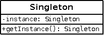

Singleton (Одиночка)

Паттерн проектирования Singleton
Описание Singleton
В приложении экземпляр определённого класса должен присутствовать гарантировано в одном экземпляре.
По сути создаётся статический экземпляр класса: защищённый от клонирования, обычного инстанцирования через конструктор, и других способов получения ссылки на единственный экземпляр — кроме статического метода-конструктора.
Пример кода
Пример реализации на PHP7
За и против
Singleton часто называют «анти-паттерном», т.к. при использовании он несёт следующие проблемы:
- Статический метод получения экземпляра создаёт жесткую связь, игнорируя Инъекцию зависимостей.
- Приложение неявно обладает неким состоянием.
- «Одиночку» проблематично заменить в тестовом окружении.
Эти причины снижают тестируемость кода.
Поскольку это один из самых простых для понимания шаблонов, его часто используют новички, при этом злоупотребляя им. В то же время, для некоторых задач, когда нужен некий глобальный объект, и простейший способ доступа к нему из любой точки приложения (например Service Locator) самым простым решением является Singleton.
UML-диаграмма создана в программе Dia